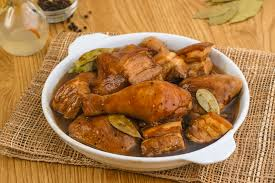

Filipino adobo has a history that dates back well before the presence of Spaniards in the country.
The history of marinating meat in vinegar and salt was first introduced to the country by the Malay settlers as a means of food preservation. Locally, coconut vinegar and palm vinegar were used as well as clay pots to cook and stew.
Next came the Chinese traders who brought their soy sauce. The marinade and stewing of the meat with vinegar and garlic now added soy sauce as the salting agent. Yet, at this time, there was no official name given to this dish.
Then, the Spaniards arrived in the 16th century, saw the method of cooking which they knew of as “adobar” or “to marinate”, and named the dish “adobo”.
30 mins
Easy
4 people
When cooking Adobo, you need to make sure that you do not cover the pan, so that the vinegar taste is released properly and will not trapped.